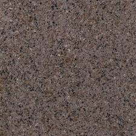
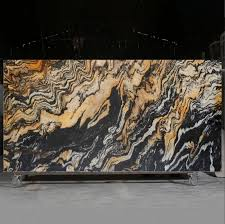
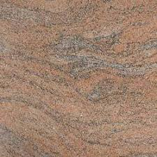
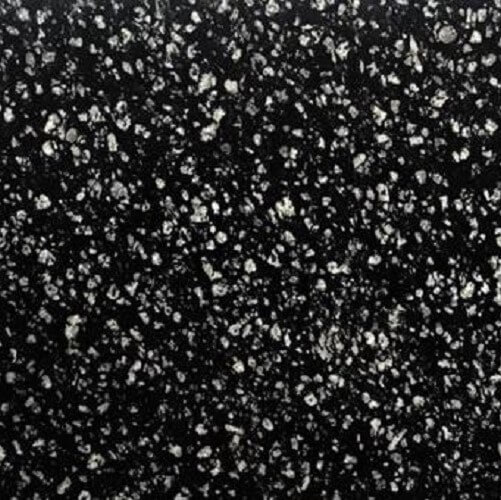
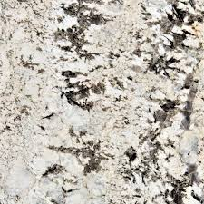
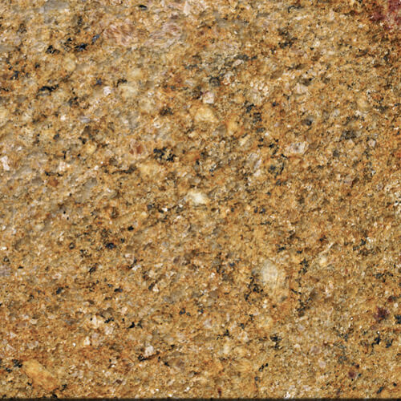

India has vast reserves of different types of granite and marbles. Granite
found in India is known for
its hardness and beauty. In Fact, India is one of the leading exporters of all types of granite. The
type of Granite in India can be categorized on the basis of region and color. On the basis of
region,
granite can be classified into South India Granite and North India Granite. Popular granite quarried
in
South India are Absolute Black, Black Galaxy, New Kashmir White, Vizag Blue, Black Pearl, Steel
Grey,
Viscount White, Colonial White, Imperial Gold, and so on. Major regions and cities where granites
are
quarried in south India are Ongole, Mysore, Madurai, Vizag, Bangalore and Chennai. Our company,
Fortuna
Marmo Granite has factory in Ongole and we are one of the leading granite manufacturers in South
India.
Some of the popular granite found in North India are new imperial red, Jhansi red, crystal yellow,
Alaska white, blue dunes, Platinum white, Rajasthan black, and so on.
Region and major cities where granite quarried include Udaipur, Jalore, Jhansi, and Jaipur. On the
basis
of color granite can be classified into- Black, Red, Green, Gold, yellow, pink, grey, and blue.
Fortuna Marmo Granite is the major supplier of the Indian granite and marbles. We have factories and
work units in Mysore, Ongole, Udaipur and Jalore. We can manufacture high quality granite
countertops,
slabs, and tiles at very competitive rates and as per the specification of our clients.

Crystal Brown
Crystal Brown Granite can range from polished to honed,
depending on the desired look.
It can also be used for both in & outdoor applications.

Fusion Gold Granite
Fusion Gold Granite is unique and elegant granite.
The background of this hazy design is dark black with golden speckles and white
speckling.

Indian Juparana Granite
Indian Juparana Granite is a kind of pink granite quarried in the
southern
part of India.
Most of its quarries are located in the Ramanagara district of Karnataka.

Coin Black Granite
Coin Black Granite is a variant of black granite quarried mainly in the northern parts
of
India.
Most of its quarries are located in the state of Rajasthan. It is also known as Oyster
Black.

Azul White Granite
The Azul White Granite has a rich feldspar composition
that results in a variety of dark brown spots, faint grey flecks, and bluish specks on a
white background.

Ghibli Gold Granite
Ghibli Gold Granite is a variant of yellow granites quarried in the southern part of
India.
It is also called ivor
y silk granite, monde yellow granite, monde gold granite, toasted almond granite, and
Sahara
beige granite.